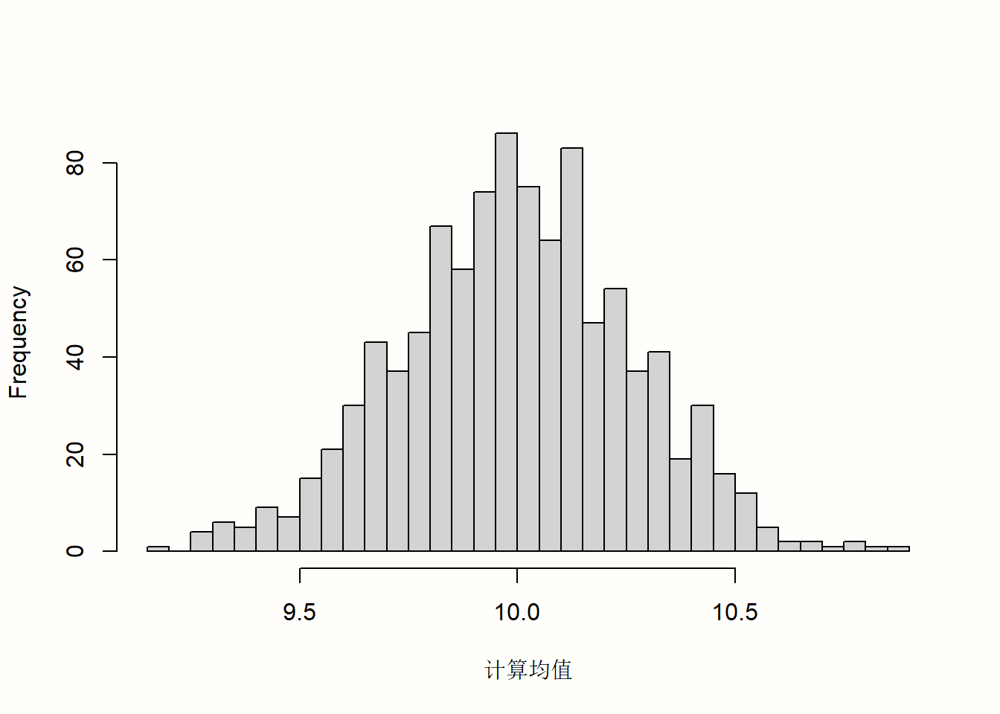
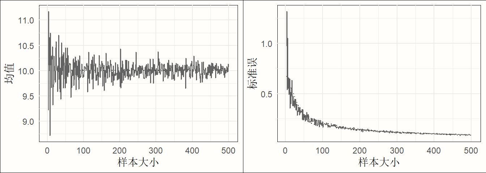

set.seed(123)
sample <- rnorm(n = 50, mean = 10, sd = 2)R语言Meta分析
效应量

在 上一章节中，我们已经熟悉了 R 语言，并且学习了一些导入和操作数据的实用工具。本书的第二部分，我们可以在学习元分析中使用的核心统计技术的同时，应用和扩展我们的 R 语言知识。
在第 @ref(what-are-mas) 章中，我们将元分析定义为一种总结多个研究的定量结果的技术。在元分析中，研究本身而不是个体成为我们分析的基本单位。
这引入了新的问题。在一项初步研究中，通常很容易计算汇总统计量，通过这些统计量我们可以描述我们收集的数据。例如，通常在初步研究中计算连续结果的算术均值 \(\bar{x}\) 和标准差 \(s\)。
然而，这只有在初步研究中满足一个基本先决条件时才有可能：我们知道结果变量在所有研究对象中都是以相同的方式测量的。对于元分析，通常不满足这个假设。想象一下，我们想要进行一项元分析，其中我们感兴趣的结果是八年级学生的数学技能。即使我们应用严格的纳入标准（参见第 @ref(research-question) 章），也很可能不是每个研究都使用完全相同的测试来衡量数学技能；有些甚至可能只报告通过或未通过测试的学生比例。这使得直接定量综合结果几乎不可能。
为了进行元分析，我们必须找到一个可以在所有研究中进行汇总的效应量。有时，这种效应量可以直接从出版物中提取；更多时候，我们必须从研究中报告的其他数据中计算出来。所选的效应量度量可以对元分析的结果及其可解释性产生重大影响。因此，它们应该满足一些重要的标准 [@lipsey2001practical; @higgins2019cochrane]。特别是，元分析中选择的效应量度量应该：
可比较。重要的是，效应量度量在所有研究中具有相同的含义。让我们再次以数学技能为例。当研究使用不同的测试时，将数学测试中实验组和控制组之间的得分差异进行合并是没有意义的。例如，测试的难度等级或可以获得的最大分数可能不同。
可计算。只有当可以从初步研究中推导出其数值时，我们才能将效应量度量用于我们的元分析。必须可以根据所有纳入研究的数据计算出效应量。
可靠。即使可以计算所有纳入研究的效应量，我们也必须能够对其进行统计合并。要将某些度量用于元分析中，至少必须能够计算标准误（参见下一章）。同样重要的是，效应量的格式适合于我们想要应用的元分析技术，并且不会导致我们估计中的错误或偏差。
可解释。我们选择的效应量类型应适合于回答我们的研究问题。例如，如果我们对两个连续变量之间关联的强度感兴趣，通常使用相关性来表达效应的大小。解释相关性的幅度相对简单，并且许多研究人员可以理解它们。在接下来的章节中，我们将了解到，有时不可能使用既易于解释又适合我们统计计算的结果度量。在这种情况下，有必要在合并效应量之前将其转换为具有更好数学性质的格式。
您很可能之前已经遇到过“效应量”这个术语。我们也在这里使用了这个词，但没有过多关注它到底代表什么。因此，在下一节中，我们应该探讨当我们谈论“效应量”时，我们实际指的是什么。
什么是效应量？
在本书中使用的术语中，效应量被定义为量化两个实体之间关系的度量。它捕捉了这种关系的方向和大小。如果关系以相同的效应量表示，则可以比较它们。
我们想在此强调，这只是定义效应量含义的一种方式。效应量的定义可以更广泛或更狭窄，并且不同的人使用该术语的方式也不同 [@borenstein2011introduction, 第 3 章]。有些研究人员只在提及干预研究的结果时才谈论效应量，这些研究通常表示为治疗组和对照组之间的差异（参见第 @ref(s-md) 章）。使用这种概念化，“效应量”是指治疗的效果，以及这种效果有多大。
我们认为，这是一个相当狭隘的定义。不仅治疗可以对某些变量产生影响；效果也可以在没有任何直接人为干预的情况下自然出现。例如，社会人口变量（如父母的收入和教育）可能会对其子女的教育程度产生影响。相关性描述了我们通过一个变量的值预测另一个变量的值的能力，也可以被视为一种效应量。
另一方面，说我们可以合并作为元分析一部分的所有内容都自动成为效应量可能有点过分。正如我们将要了解的，有一些中心趋势的度量，例如样本均值，也可以在元分析中使用。但是，单独的样本均值不能量化两种现象之间的关系，并且没有“效应”。尽管如此，在本书中，我们经常使用“效应量”这个词作为以部分代整体，代表实际效应的估计值，以及“单变量”和中心趋势度量。我们这样做不是因为这很准确，而是因为它更方便。
其他人完全不赞成使用“效应量”这个术语。他们强调，“效应量”中的“效应”一词表明存在因果关系。然而，我们都知道相关性不是因果关系，并且干预组和对照组之间的差异不一定由治疗本身引起。最终，由您来决定您喜欢哪个定义，但请注意，当人们谈论效应量时，他们可能心中有不同的概念化。
在数学符号中，通常使用希腊字母 theta (\(\theta\)) 作为 真实 效应量的符号1。更准确地说，\(\theta_k\) 代表研究 \(k\) 的真实效应量。重要的是，真实效应量与我们在研究发表的结果中发现的观察到的效应量不相同。观察到的效应量只是真实效应量的估计值。通常使用 帽子 (^) 符号来澄清我们所指的实体只是一个估计值。因此，研究 \(k\) 中观察到的效应量，我们对真实效应量的估计，可以写成 \(\hat\theta_k\)。
但是，为什么 \(\hat\theta_k\) 与 \(\theta_k\) 不同？它的不同是因为抽样误差，可以表示为 \(\epsilon_k\)。在每个初步研究中，研究人员只能从整个总体中抽取一个小样本。例如，当我们想要检查定期锻炼对初级保健患者心血管健康的好处时，我们将只能包括一小部分患者，而不是世界上所有的初级保健患者。研究只能从无限大的总体中抽取小样本这一事实意味着观察到的效应将与真实的总体效应不同。
简而言之，\(\hat\theta_k\) 因此与 \(\theta_k\) 加上一些抽样误差 \(\epsilon_k\) 相同2。
\[\begin{align} \hat\theta_k = \theta_k + \epsilon_k (\#eq:es1) \end{align}\]
显然，我们希望研究 \(k\) 的效应量估计值 \(\hat\theta_k\) 尽可能接近真实的效应量，并且 \(\epsilon_k\) 尽可能小。在其他条件相同的情况下，我们可以假设具有较小 \(\epsilon\) 的研究将提供更精确的真实效应量估计值。元分析方法会考虑效应量估计值的精确程度（参见第 @ref(pooling-es) 章）。在合并不同研究的结果时，它们会赋予具有更大精确度（即更少抽样误差）的效应更高的权重，因为它们是真实效应的更好估计量 [@hedges2014statistical]。
但是我们如何知道抽样误差有多大？不出所料，研究的真实效应 \(\theta_k\) 是未知的，因此 \(\epsilon_k\) 也是未知的。然而，通常我们可以使用统计理论来近似抽样误差。量化 \(\epsilon\) 的一种常见方法是通过标准误 (\(SE\))。标准误定义为抽样分布的标准差。抽样分布是我们从总体中多次抽取具有相同样本大小 \(n\) 的随机样本时获得的度量的分布。
我们可以通过在 R 中模拟数据来使这更具体。我们可以假装使用 rnorm 函数从更大的总体中抽取随机样本。此函数允许我们从正态分布中抽取随机样本，因此得名。rnorm 函数模拟了一个“完美世界”，在其中我们知道值如何在真实总体中分布，并允许我们抽取样本。
该函数采用三个参数：n，我们希望在样本中拥有的观测数；mean，总体的真实均值；以及 sd，真实标准差。rnorm 函数具有随机分量，因此为了使结果可重现，我们必须首先设置一个种子。这可以使用 set.seed 函数来完成，我们必须为其提供一个数字。对于我们的示例，我们选择将种子设置为 123。此外，我们想模拟我们总体的真实均值为 \(\mu =\) 10，真实标准差为 \(\sigma =\) 2，并且我们的样本由 \(n=\) 50 个随机选择的观测值组成，我们将其保存在名称 sample 下。
这是我们的代码的样子：
现在，我们可以计算样本的均值。
mean(sample)[1] 10.06881我们看到均值为 \(\bar{x} =\) 10.07，这已经非常接近我们总体中的真实值。现在可以通过重复我们在这里所做的事情 - 抽取一个随机样本并计算其均值 - 无数次来创建抽样分布。为了为您模拟此过程，我们执行了之前 1000 次的步骤。
图 @ref(fig:samplingdist) 中的直方图显示了结果。我们可以看到，样本的均值非常类似于均值为 10 的正态分布。如果我们抽取更多样本，均值的分布将更接近正态分布。这个想法在统计学最基本的原则之一中得到表达，即中心极限定理 [@aronow2019foundations, 第 3.2.4 章]。

标准误定义为此抽样分布的标准差。因此，我们计算了 1000 个模拟均值的标准差，以获得标准误的近似值。结果是 \(SE =\) 0.267。
正如我们之前提到的，我们不能简单地通过模拟真实的抽样分布来计算现实生活中的标准误。但是，有一些基于统计理论的公式允许我们计算标准误的估计值，即使我们仅限于一个观察到的样本 - 我们通常是这样。均值的标准误的计算公式定义如下：
\[\begin{align} SE = \frac{s}{\sqrt{n}} (\#eq:es2) \end{align}\]
它将标准误定义为样本的标准差 \(s\)，除以样本大小 \(n\) 的平方根。使用此公式，我们可以轻松地使用 R 计算之前 sample 对象的标准误。请记住，我们的随机样本的大小为 \(n =\) 50。
sd(sample)/sqrt(50)[1] 0.2618756如果我们将此值与我们在抽样分布模拟中找到的值进行比较，我们会发现它们几乎相同。仅使用我们手头的样本，我们可以非常准确地使用公式估计标准误。
在公式 3.2 中，我们可以看到均值的标准误取决于研究的样本大小。当 \(n\) 变大时，标准误变小，这意味着研究对真实总体均值的估计变得更加精确。
为了举例说明这种关系，我们进行了另一次模拟。同样，我们使用了 rnorm 函数，并假设真实总体均值为 \(\mu =\) 10，\(\sigma =\) 2。但是这次，我们改变了样本大小，从 \(n =\) 2 到 \(n =\) 500。对于每次模拟，我们都使用公式 3.2 计算了均值和标准误。

图 @ref(fig:simulse) 显示了结果。我们可以看到，均值看起来像一个漏斗：随着样本大小的增加，均值估计变得越来越精确，并向 10 收敛。这种精确度的提高由标准误表示：随着样本大小的增加，标准误变得越来越小。
我们现在已经探索了进行元分析所需的基本要素：（1）观察到的效应量或结果度量，以及（2）其精确度，以标准误表示。如果可以从已发表的研究中计算出这两种类型的信息，那么通常也可以执行元分析综合（参见第 @ref(pooling-es) 章）。
在我们的模拟中，我们使用了变量的均值作为示例。重要的是要理解，我们在上面看到的属性也可以在其他结果度量中找到，包括常用的效应量。如果我们计算样本中的均值差异而不是均值，则此均值差异将表现出类似形状的抽样分布，并且随着样本大小的增加，均值差异的标准误也会降低（前提是标准差保持不变）。对于（Fisher 的 \(z\) 转换的）相关性，例如，也是如此。
在以下各节中，我们将介绍元分析中最常用的效应量和结果度量。这些效应量度量如此频繁使用的一个原因是它们满足了我们在本章开头定义的两个标准：它们是可靠的和可计算的。
在公式 3.2 中，我们描述了如何计算均值的标准误，但此公式只能直接应用于均值。对于其他效应量和结果度量，需要不同的公式来计算标准误。对于我们在此处介绍的效应量度量，幸运的是，这些公式存在，我们将向您展示所有这些公式。附录 中也可以找到这些公式的集合。其中一些公式有些复杂，但好消息是我们几乎不必手动计算标准误。R 中有各种函数可以为我们完成繁重的工作。
在以下部分中，我们不仅要提供对不同效应量度量的理论讨论。我们还将向您展示必须在数据集中准备哪种信息，以便我们稍后使用的 R 元分析函数可以轻松地为我们计算效应量。
我们根据效应量通常出现的研究设计类型对效应量进行分组：观察性设计（例如，自然主义研究或调查）和实验性设计（例如，对照临床试验）。请注意，这只是一种粗略的分类，而不是严格的规则。我们提供的许多效应量在技术上适用于任何类型的研究设计，只要结果数据的类型适合即可。
观察性设计中的度量和效应量
均值
算术均值可能是最常用的中心趋势度量。尽管均值很少用作结果度量，但可以很容易地在元分析中合并它们。例如，可以通过合并几个具有代表性的研究来调查男性的平均身高，以厘米或英寸表示。
算术均值 \(\bar{x}\) 的计算方法是将样本中的所有单个值 \(x_i\) 相加，然后将总和除以样本大小。
\[\begin{equation} \bar{x} = \frac{\sum^{n}_{i=1}x_i}{n} (\#eq:es3) \end{equation}\]
我们已经介绍了如何计算均值的标准误（参见第 @ref(what-is-es) 章）。我们只需将样本标准差 \(s\) 除以样本大小的平方根即可。
\[\begin{equation} SE_{\bar{x}} = \frac{s}{\sqrt{n}} (\#eq:es4) \end{equation}\]
正如我们之前所见，均值及其标准误很容易在 R 中计算。
# 为了可重现性，将种子设置为 123
# 并抽取一个随机样本 (n=50)。
set.seed(123)
sample <- rnorm(n = 50, mean = 20, sd = 5)
# 计算均值
mean(sample)[1] 20.17202# 计算标准误
sd(sample)/sqrt(50)[1] 0.6546889要进行均值的元分析，我们的数据集应至少包含以下列：
n。研究中的观测数（样本大小）。mean。研究中报告的均值。sd。研究中报告的变量的标准差。
比例
比例是另一种类型的中心趋势度量。它指定样本中有多少单位属于某个子组。比例可以取 0 到 1 之间的值，乘以 100 可以转换为百分比。例如，当我们想要检查给定时间点疾病的患病率时，比例可以用作结果度量。要计算比例 \(p\)，我们必须将属于特定子组的个体数 \(k\) 除以总样本大小 \(n\)。
\[\begin{equation} p = \frac{k}{n} (\#eq:es5) \end{equation}\]
比例的标准误可以这样计算：
\[\begin{equation} SE_{p} = \sqrt{\frac{p(1-p)}{n}} (\#eq:es6) \end{equation}\]
我们可以使用此代码在 R 中计算比例及其标准误：
# 我们为 k 和 n 定义以下值：
k <- 25
n <- 125
# 计算比例
p <- k/n
p[1] 0.2# 计算标准误
sqrt((p*(1-p))/n)[1] 0.03577709
比例的范围限制在 0 到 1 之间的事实可能存在问题 [@lipsey2001practical, 第 3 章]。当 \(p\) 接近 0 或接近 1 时，标准误会被人为压缩，这导致我们高估了比例估计的精确度。
这与抽样分布有关。当 \(p\) 的值非常低或非常高时，抽样分布将不会像图 @ref(fig:samplingdist) 中那样近似为正态分布。分布将右偏或左偏，因为随机样本不可能具有 0-1 范围之外的计算比例。
为了避免这种情况，比例通常在合并之前进行 logit 转换。Logit 转换首先涉及计算比值（参见第 @ref(or) 章）。比值定义为属于特定类别的参与者比例，除以不属于该类别的单位比例。
然后使用自然对数函数 \(\log_e\) 将比值转换为 \(p=\) 0.5 等于 0 的值且没有范围限制的格式。这确保了抽样分布近似为正态分布，并且标准误没有偏差。
Logit 转换比例及其标准误的计算可以使用以下公式 [@lipsey2001practical, 第 3 章]3：
\[\begin{equation} p_{\text{logit}} = \log_{e} \left(\frac{p}{1-p}\right) (\#eq:es7) \end{equation}\]
\[\begin{equation} SE_{p_{\text{logit}}} = \sqrt{\frac{1}{np}+\frac{1}{n(1-p)}} (\#eq:es8) \end{equation}\]
幸运的是，我们可以在 R 中使用的元分析函数会自动为我们执行此 Logit 转换。因此，我们只需要在数据集中准备以下列：
event。属于特定子组的观测数 (\(k\))。n。总样本大小 \(n\)。
相关性
Pearson 积矩相关
相关性是一种表达两个变量之间协方差量的效应量。最常见的形式是 Pearson 积矩相关4，它可以为两个连续变量计算。例如，当元分析师想要检查关系质量和幸福感之间的关系时，可以使用积矩相关作为效应量。
变量 \(x\) 和变量 \(y\) 之间的相关性 \(r_{xy}\) 定义为 \(x\) 和 \(y\) 的协方差 \(\text{Cov}(x,y)=\sigma^{2}_{xy}\)，除以其标准差 \(\sigma_x\) 和 \(\sigma_y\) 的乘积。
\[\begin{equation} r_{xy} = \frac{\sigma^{2}_{xy}}{\sigma_x \sigma_y} (\#eq:es9) \end{equation}\]
使用样本大小 \(n\)，可以这样计算 \(r_{xy}\) 的标准误：
\[\begin{equation} SE_{r_{xy}} = \frac{1-r_{xy}^2}{\sqrt{n-2}} (\#eq:es10) \end{equation}\]
在计算积矩相关时，我们通过两个变量的标准差来标准化两个变量之间的协方差。这意味着如果两个或多个研究在同一尺度上测量一个结构，那么它的相关性就会降低；一旦我们计算出相关性，就可以自动比较效应。
相关性可以取 -1 和 1 之间的值。相关性的大小通常使用 Cohen [-@cohen1988statistical] 的约定来解释：
- \(r \approx\) 0.10：小效应。
- \(r \approx\) 0.30：中等效应。
- \(r \approx\) 0.50：大效应。
但是，应该注意的是，这些约定充其量可以被视为经验法则。通常最好根据主题和先前的研究将相关性量化为小或大。
不幸的是，像比例（第 @ref(props) 章）一样，相关性在其范围内受到限制，并且当我们估计小样本研究的标准误时，可能会引入偏差 [@alexander1989statistical]。
因此，在元分析中，相关性通常转换为 Fisher 的 \(z\)5。像 Logit 转换一样，这还需要使用自然对数函数来确保抽样分布近似为正态分布（有关更详细的说明，请参见第 @ref(ratios) 章）。公式如下：
\[\begin{equation} z = 0.5\log_{e}\left(\frac{1+r}{1-r}\right) (\#eq:es11) \end{equation}\]
如果我们知道样本大小 \(n\)，则可以通过以下公式获得 Fisher 的 \(z\) 的近似标准误 [@olkin1995correlations]：
\[\begin{equation} SE_{z} = \frac{1}{\sqrt{n-3}} (\#eq:es12) \end{equation}\]
我们也可以使用 cor 和 log 函数直接在 R 中计算 \(r_{xy}\) 和 \(z\)。
# 模拟两个连续变量 x 和 y
set.seed(12345)
x <- rnorm(20, 50, 10)
y <- rnorm(20, 10, 3)
# 计算 x 和 y 之间的相关性
r <- cor(x,y)
r[1] 0.2840509# 计算 Fisher 的 z
z <- 0.5*log((1+r)/(1-r))
z[1] 0.2920831谢天谢地，在 R 中进行相关性元分析时，我们不必手动执行 Fisher 的 \(z\) 转换。我们只需要在数据集中添加以下列：
cor。研究的（未转换的）相关系数。n。研究的样本大小。
点二列相关
Pearson 积矩相关描述了两个连续变量之间的关系。如果只有一个变量 \(y\) 是连续的，而另一个变量 \(x\) 是二分的（即仅取两个值），则可以计算 点二列相关，该相关性表示 \(y\) 可以从 \(x\) 中的组成员资格预测的程度。
可以使用以下公式计算点二列相关：
\[\begin{equation} {r_{pb}}= \frac{(\bar{y_1}-\bar{y_2})\sqrt{p_1(1-p_1)}}{s_y} (\#eq:es13) \end{equation}\]
在此公式中，\(\bar{y_1}\) 是仅考虑二分变量 \(x\) 的第一组时连续变量的均值，\(\bar{y_2}\) 是仅考虑 \(x\) 的第二组时的均值；\(p_1\) 是属于 \(x\) 中第 1 组的案例比例，\(s_y\) 是 \(y\) 的标准差。
可以使用 cor 函数在 R 中计算点二列相关（参见上一节）。如果其中一个提供的变量仅采用两个值，而另一个是连续的，则会自动计算（近似）点二列相关。
点二列相关与标准化均值差非常相似，我们将在后面介绍（第 @ref(b-group-smd) 章）。两种效应量度量都量化了连续变量的值在两组之间的差异程度。然而，在元分析中合并点二列相关并不常见。像积矩相关一样，点二列相关对于元分析具有不良的统计特性，例如当组比例不相等时，范围会受到限制 [@bonett2019point]。
因此，当我们对连续结果变量的组间差异感兴趣时，建议将点二列相关转换为标准化均值差以进行元分析 [@lipsey2001practical, 第 3 章]。本书“实用工具”部分的第 @ref(convert-corr) 章中可以找到将点二列相关转换为标准化均值差的公式。
实验设计中的效应量
(标准化) 均值差
组间均值差
组间均值差 \(\text{MD}_{\text{between}}\) 定义为两个独立组之间均值的原始、未标准化的差异。当研究至少包含两组时，可以计算组间均值差，这通常是受控试验或其他类型的实验研究的情况。在元分析中，只有当所有研究都在完全相同的尺度上测量感兴趣的结果时，才能使用均值差。例如，在科学研究中，体重几乎总是以千克为单位测量；在糖尿病学中，HbA\(_{\text{1c}}\) 值通常用于测量血糖。
均值差定义为组 1 的均值 \(\bar{x}_1\) 减去组 2 的均值 \(\bar{x}_2\)：
\[\begin{equation} \text{MD}_{\text{between}} = \bar{x}_1 - \bar{x}_2 (\#eq:es14) \end{equation}\]
可以使用以下公式获得标准误：
\[\begin{equation} SE_{\text{MD}_{\text{between}}} = s_{\text{pooled}}\sqrt{\frac{1}{n_1}+\frac{1}{n_2}} (\#eq:es15) \end{equation}\]
在该公式中，\(n_1\) 代表组 1 中的样本大小，\(n_2\) 代表组 2 中的样本大小，\(s_{\text{pooled}}\) 代表两组的合并标准差。使用组 1 的标准差 (\(s_1\)) 和组 2 的标准差 (\(s_2\))，可以这样计算 \(s_{\text{pooled}}\) 的值：
\[\begin{align} s_{\text{pooled}} = \sqrt{\frac{(n_1-1)s^2_1+(n_2-1)s^2_2}{(n_1-1)+(n_2-1)}} (\#eq:es16) \end{align}\]
现在是提供一个示例的时候了，说明我们如何在 R 中计算均值差及其标准误。第一步，我们将模拟一些数据。我们在这里只这样做，以便我们有一些合理的值可以使用。在真正的元分析中，x1 和 x2 的均值以及它们的标准差 s1 和 s2 是我们希望可以从已发表的论文中提取的东西，与组样本大小 n1 和 n2 相同。因此，您不必太担心第一部分。
# 生成具有不同总体均值的两个随机变量
set.seed(123)
x1 <- rnorm(n = 20, mean = 10, sd = 3)
x2 <- rnorm(n = 20, mean = 15, sd = 3)
# 计算公式所需的值
s1 <- sd(x1)
s2 <- sd(x2)
n1 <- 20
n2 <- 20有了这些数据，我们可以继续进行核心部分，在其中我们使用之前显示的公式计算均值差及其标准误：
# 计算均值差
MD <- mean(x1) - mean(x2)
MD## [1] -4.421357# 计算 s_pooled
s_pooled <- sqrt(
(((n1-1)*s1^2) + ((n2-1)*s2^2))/
((n1-1)+(n2-1))
)
# 计算标准误
se <- s_pooled*sqrt((1/n1)+(1/n2))
se## [1] 0.8577262通常没有必要像我们在这里所做的那样手动进行这些计算。对于均值差的元分析，我们只需要在数据集中准备以下列：
n.e。干预/实验组中的观测数。mean.e。干预/实验组的均值。sd.e。干预/实验组中的标准差。n.c。对照组中的观测数。mean.c。对照组的均值。sd.c。对照组中的标准差。
组间标准化均值差
标准化组间均值差 \(\text{SMD}_{\text{between}}\) 定义为两个独立组之间均值的差异，通过合并标准差 \(s_{\text{pooled}}\) 进行标准化。在文献中，标准化均值差也通常称为 Cohen 的 \(d\)，以心理学家和统计学家 Jacob Cohen 的名字命名。
与未标准化均值差相比，\(\text{SMD}_{\text{between}}\) 以标准差单位表示两组之间的差异。这可以通过将两组的原始均值差 \(\bar{x_1}\) 和 \(\bar{x_2}\) 除以两组的合并标准差 \(s_{\text{pooled}}\) 来实现：
\[\begin{equation} \text{SMD}_{\text{between}} = \frac{\bar{x}_1 - \bar{x}_2}{s_{\text{pooled}}} (\#eq:es17) \end{equation}\]
其中 \(s_{\text{pooled}}\) 使用我们在第 @ref(b-group-md) 章中已经介绍的相同公式 (3.16) 计算。标准化均值差比未标准化均值差更常用于元分析。这是因为 \(\text{SMD}_{\text{between}}\) 可以在研究之间进行比较，即使这些研究没有使用相同的工具来测量感兴趣的结果。
标准化具有这样的效果：\(\text{SMD}_{\text{between}}=\) 1 始终表示两组均值相差
Footnotes
在本书中，我们在讨论效应量时，将主要遵循 Schwarzer 等人 [-@schwarzer2015meta] 使用的符号。↩︎
应该注意的是，除了抽样误差之外，观察到的效应量与真实效应量不同的原因通常还有更多；例如，研究方法的偏差或测量误差。在第 @ref(es-correction) 章中，我们将更详细地讨论这一点。↩︎
要将 Logit 比例转换回原始比例，我们可以使用以下公式：\(p=\frac{\exp(p_{\text{logit}})}{1+\exp(p_{\text{logit}})}\), 其中 \(\exp\) 是指数函数，在 R 中通过
exp实现（参见第 @ref(ppoolbin) 章）。↩︎这种类型的相关性以 Karl Pearson 的名字命名，他是一位著名的统计学家，也在元分析的历史中发挥了作用（参见第 @ref(history) 章）。↩︎
Fisher 的 \(z\) 以我们在第 @ref(history) 章中提到的另一位著名统计学家 Ronald A. Fisher 的名字命名。↩︎